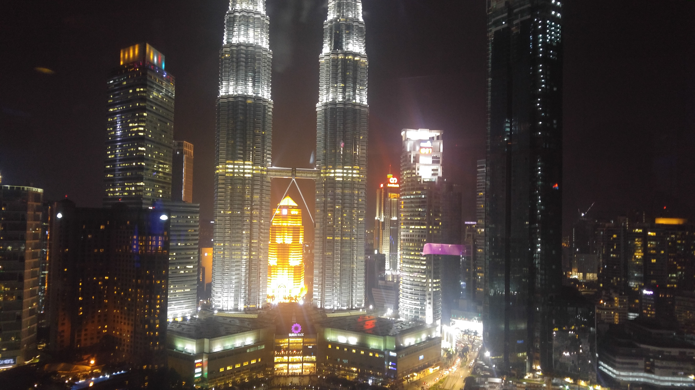

Go Back
Kuala Lumpur

Kuala Lumpur is one of my all time favourite cities. This city has so much to offer for all sorts of different types of tourists. The food is delicious, the nightlife is great, the culture and diversity is unique and there are plenty of sightseeing and shopping opportunities. To date I've been to KL twice and definitely plan to return again. It offers Southeast Asia prices (other than alcohol) with first world ammenities. Most people in KL speak English so that's another bonus for people coming from English speaking countries. I found the people to be friendly, welcoming and helpful. Some of my favourite activities in KL are sightseeing at places like the Batu Caves and Petronas Twin Towers as well as exploring the diverse and delicious food scene. Here are my recommendations for Kuala Lumpur.
The Batu Cave is a holy Hindu sight located in the Northern Gombok area in metro Kuala Lumpur. Characterized by a massive golden buddha statue and colourful steps that lead into a large cave in the limestone rock. The original steps into the cave were built in 1920 but as they were wooden they were subjected to lots of wear and tear. The stronger concrete steps were completed in 1940. There are 272 steps going up to the caves- be prepared for a bit of exercise! Once inside the caves you will see some souvenir vendors and a few worship areas for Hindus. Every year in either January or February when there is a full moon the Thaipusam festival occurs here. It's a pilgrimage site not only for Malay Hindus but Hindus from all over the world. Supposedly over a million people come to this site every year. The caves are completely free to visit and it should cost no more than 5 usd to take a grab car there from the Bukit Bintang area. Keep in mind that you should dress modestly, especially women, meaning long dresses/ skirts or pants and t-shirts or long sleeve shirts. The dress code seemed more lenient for men allowing shorts and a t-shirt but women are required to buy a scarf to cover up for 15 ringit if they aren't wearing appropriate attire.
Kuala Lumpur's most iconic tower(s) are definitely the Petronas Twin Towers. These are the largest twin towers in the world and are an essential sightseeing destination in the city for tourists. They are centrally located and are backed by a large park where you can walk around and take in the views. There is also a small swimming area in this park that seemed popular with younger kids. In the middle of the two twin towers is a luxury shopping mall with brands like gucci, guess, fendi etc.. You can also go up to the skybridge observation deck between the two towers for 98 MYR (about 21 usd). Unfortunately, the day I visited they were sold out of tickets as I guess they have a maximum number of people that can go up per day. Luckily, getting photos from outside and exploring the park and shopping mall are completely free and are fun ways to spend an hour or two in Kuala Lumpur.
Right next to the twin towers is Aquaria KLCC. I visited this aquarium the first time I was in KL back in 2017. It shows a large diversity of marine life that is present throughout Malaysias waters ranging from sharks to turtles to eels. It's one of the better aquariums I've been to and is definitely a great place to go with your family or children. As of 2023 tickets cost 69 ringit for foreign adults (about 15 usd). This is a fun activity to couple with your visit to the Petronas Twin Towers as it takes less than 5 minutes to walk between the two!
I'm not joking when I say the food alone is enough reason to visit Kuala Lumpur. Due to the huge diversity of people and cultures that inhabit the city the food scene is just as diverse. City blocks are filled with Indian, Arabic, Chinese, Southeast Asian and Western food options. Some of my favourite options were the hawker stalls. There are many hawker stalls throughout the city. It just so happened that I was staying on Bukit Ceylong street so I frequently visited the stalls on this road right next to the Ramada Hotel. Here you can get a large plate with rice, curries, vegetables, boiled eggs, tempe etc for no more than a few dollars. The value is incredible. It's very easy to eat 2-3 meals a day here for less than 5 usd and not compromise at all on the quality or quantity. Aside from these hawker stalls there are tons of great restaurants around. Jalan Berangan in Bukit Bintang has some fantastic restaurant options. I enjoyed eating at some of the Indian and Arabic restaurants on this street. Adjacent to this street is Changkat Bukit Bintang which is the street with lots of western style restobars. This is one of the main centers in the city for nightlife and offers western food (though be prepared to pay higher prices here). You can also visit the Petaling Street area which is considered to be the Chinatown. There are also tons of restaurants and hawker stalls here with more delicious food. You're more likely to find more Chinese influence in this area which is also a relatively short walk away from Bukit Bintang. Below I'll talk specifically about Jalan Alor which is Kuala Lumpur's most famous food street.
Perhaps the best showcase of the diversity of cuisines in Malaysia is on Jalan Alor food street. Not only does it offer hundreds of restaurants and food stalls but it's a great way to experience the hustle and bustle of the city. You'll be overwhelmed with smells, colours, noise and action. Our favourite restaurant that we tried was called Bamboo. They have fantastic seafood here. We opted to try the chef's recommendation which was a platter for two with fried fish, clams, squid, shrimp, noodles, vegetables and a delicious spicy chili sauce. We even returned a second day to try their Tom Yam Soup which was also great. For dessert try a fried banana from one of the hawker stalls. Jalan Alor can be a bit more expensive than less touristy areas but does deserve at least one visit during your trip as it makes for an overall memorable experience.
Bukit Bintang is one of the most popular neighbourhoods for tourists in KL and for good reason. It's one of my favourite neighbourds that I've ever experienced in any city. At your doorstep are literally hundreds of restaurants, bars, shops and sightseeing opportunities. It's walkable and really is the perfect area for tourists or expats to stay in. We were lucky to find a great airbnb at the Seri Bukit Ceylon building. Just across the street are plenty of hawker stalls, restaurants, cafes and bars. It was just a 5 minute walk away from Jalan Alor street and maybe 10 minutes from the Pavilian Shopping Mall. I really really recommend staying in Bukit Bintang especially if it's your first visit to this excellent city!